This article retains its original experiments and examples. For current package usage, see the usage guide.
As the t-SNE FAQ notes, “who cares about Swiss rolls when you can embed complex real-world data nicely”, a very reasonable position to take. But Linderman and Steinerberger think that Swiss Roll embedding with t-SNE can be improved by modifiying the early exaggeration settings, and the it-SNE paper also considers the Swiss Roll.
Because it’s apparently has been asked asked frequently enough to appear on the t-SNE FAQ, here we shall document the behavior of various flavors of SNE on it, without expecting to be amazed by any of the results.
Datasets
At least in the snedata function I use, the general
formula for the Swiss Roll is:
\begin{aligned} x &= \phi \cos \left( \phi \right) \\ y &= \phi \sin \left( \phi \right) \\ z &= \psi \end{aligned}
where \phi is a random number
sampled uniformally from (1.5\pi,
4.5\pi) and \psi is a random
number sampled uniformally from (0,
10). For some reason, the exact formula isn’t stated explicitly
in either the Isomap or Locally Linear
Embedding papers which seem to have popularized the use of the
dataset. This leads to some minor inconsistencies between publications.
Some publication swap the definition of y and z.
No-one seems to agree on how large \psi
should get. The maximum value of the Matlab data provided on the MIT Isomap
datasets page suggests that it was 50. The Stochastic Proximity
Embedding paper uses 10, the it-SNE paper
uses 30, probably based on the implementation in the Matlab
Dimensionality
Reduction Toolbox The scikit-learn
(0.19.1) source uses 21. It doesn’t really matter, as
it only affects the length of the roll. I prefer the default shorter
value of 10, because then PCA will display the XY
cross-section which is a superior visualization for understanding the
data, as this comparison of the XY and XZ cross-section of a Swiss Roll
with 3000 points and a max \psi = 30
demonstrates:
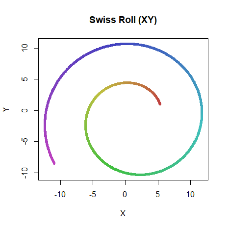 |
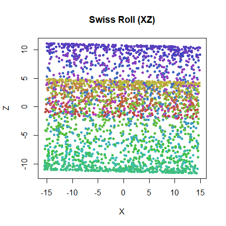 |
Some versions of the Swiss Roll have the option to add some Gaussian
noise to each coordinate. The DR Toolbox uses a standard deviation of
0.05. I won’t do that in these experiments here. In short,
if you think this matters or you want to reproduce literature results,
you will probably need to see the code used to generate the roll unless
they authors have been incredibly specific (and they usually
aren’t).
I’ll look at the usual Swiss Roll settings I like to use with 1000 points:
sr1k <- snedata::swiss_roll()Then to really overdo it, I’ll also look at a larger Swiss Roll data set with 3000 points, with three times the usual length from the defaults I usually use. This corresponds to the parameters used in the it-SNE paper, which presents results which show the Swiss Roll quite well unfolded using ASNE.
sr3k_30 <- snedata::swiss_roll(n = 3000, max_z = 30)Settings
Compared to other datasets, I gave the methods here an extra large number of iterations to really converge the results, just to try and make sure that if it was going to get unrolled every method got the chance to get there eventually. For the Swiss Roll only, I also ran geodesic MMDS to demonstrate that this manifold is unfoldable.
The investigation of the three clusters dataset found that using ASNE with the input bandwidths used in the output kernel might be a good strategy for low-dimensional datasets. So we shall use those methods here too. These are indicated by adding a ‘B’ to the beginning of the methd name, e.g. ASNE with bandwidths is “BASNE”.
Other things we’ll look at include changing the initialization from scaled PCA to Laplacian Eigenmaps (spectral-based embeddings have a reputation for doing a reasonable job on the Swiss Roll), and using the knn input kernel.
Optimization is a mix of the usual Delta-Bar-Delta t-SNE settings, but with the learning rate adjusted, and L-BFGS, which works perfectly well here with default settings.
# Typical SNE settings
swiss_tasne <- smallvis(
swiss,
scale = FALSE,
perplexity = 10,
Y_init = "spca",
method = "tasne",
eta = 0.1,
max_iter = 50000,
epoch = 100,
tol = 1e-8
)
# GMMDS
swiss_gmmds <- smallvis(
swiss,
scale = FALSE,
perplexity = 10,
Y_init = "spca",
method = "gmmds",
eta = 0.001,
max_iter = 50000,
epoch = 100,
tol = 1e-8
)
# Laplacian Eigenmap initialization
sr3k_basne_u20 <- smallvis(
X = sr3k_30,
scale = FALSE,
perplexity = 20,
method = "basne",
Y_init = "lap",
max_iter = 50000,
epoch = 10,
opt = list("L-BFGS")
)
# ASNE with kNN input kernel
sr3k_knnasne_u20_pca <- smallvis(
X = sr3k_30,
scale = FALSE,
perplexity = 20,
method = list("asne", inp_kernel = "knn"),
Y_init = "spca",
max_iter = 50000,
epoch = 10,
opt = list("L-BFGS")
)Results
1000 points
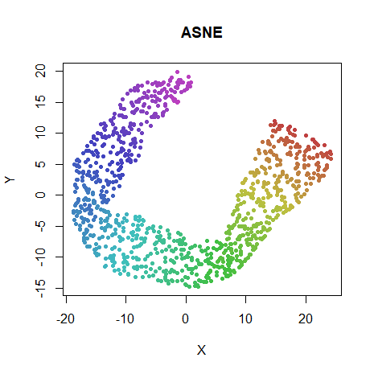 |
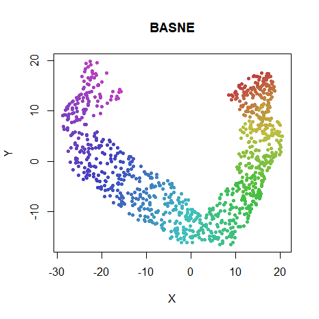 |
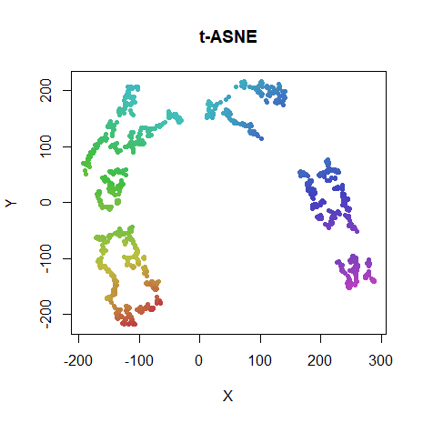 |
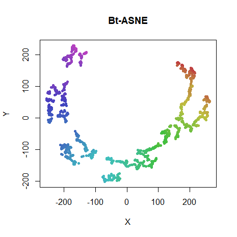 |
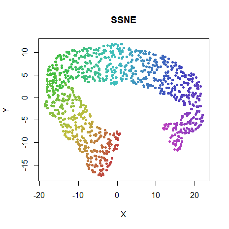 |
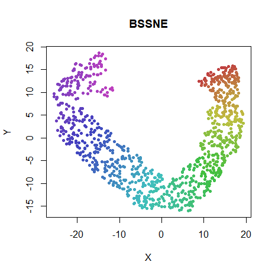 |
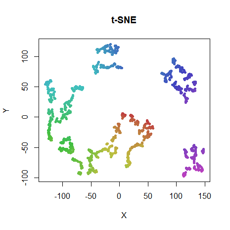 |
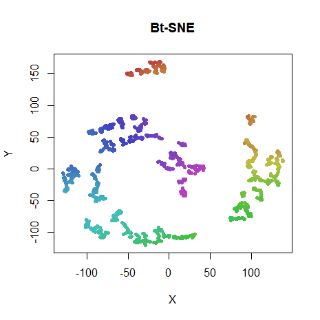 |
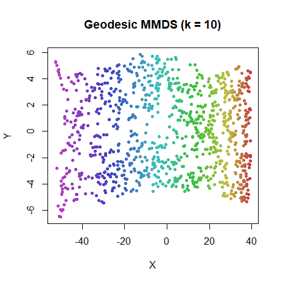 |
No SNE method manages to fully unroll the manifold, despite being given ample number of iterations. By comparison GMMDS gets it done in 100 iterations. BASNE seems to get closest to fully unrolling. The t-distributed versions do terribly (as expected), and it can’t be said that adding the bandwidths helps.
SSNE and BSSNE don’t do noticeably differently from ASNE and BASNE.
One possibility as to the difficulty of unfolding the manifold is the lack of a hard cut-off in the similarity function, which may allow longer range points to contribute to the gradient, which will encourage the folding. To test this, we can replace the Gaussian kernel in the input space with a symmetrized k-nearest-neighbor graph, where the perplexity is treated as k, and
p_{j\mid i} = \begin{cases} \frac{1}{k}, & \text{if } i \text{ and } j \text{ are neighbors}, \\ 0, & \text{otherwise}. \end{cases}
The output kernel is still Gaussian (or t-distributed), so it doesn’t totally remove long-distance effects, but it’s still worth having a look at.
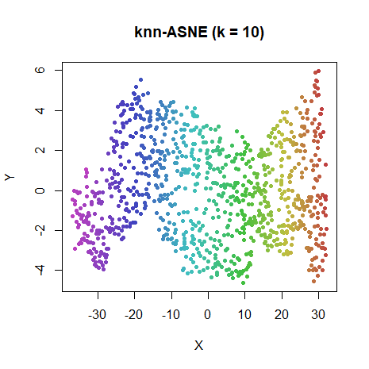 |
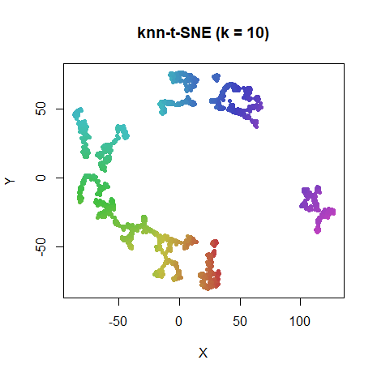 |
I’ll grant that the knn-ASNE looks less than perfect, but it does a lot better job than any of the others. t-SNE results aren’t much different, though.
3000 points
As Kitazono and co-workers presented a reasonably well unfolded Swiss Roll using ASNE, I decided to have another go using their slightly different data set parameters (the roll is slightly longer). Their initialization used the normal random initialization, rather than my favored scaled PCA approach. Initial experiments suggested that in this case, random initializations do work better, and maybe the PCA initialization was too tough for SNE to unfold. So for the results below, I use the Laplacian Eigenmap starting point, which is much more unfolded than the PCA version. The perplexity in this case was set to 20. The Kitazono results state they used a perplexity of 30, but this seemed to lead to folding occurring, even with GMMDS. Different scaling options didn’t seem to have an effect. I even regenerated a Swiss Roll in GNU Octave using the DR Toolbox code including Gaussian noise, then reimporting it into R as CSV data, but it didn’t make a difference. It will have to stay a mystery.
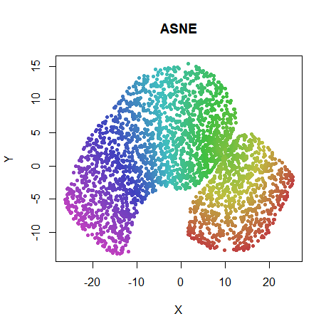 |
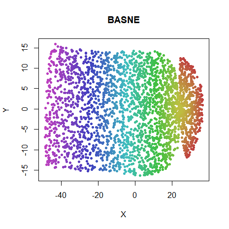 |
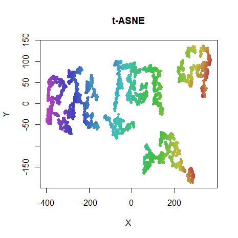 |
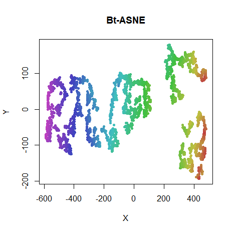 |
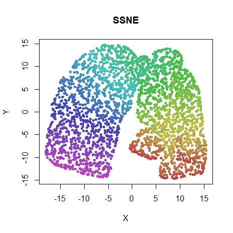 |
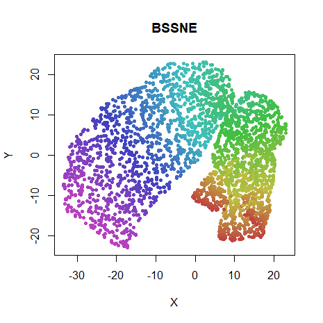 |
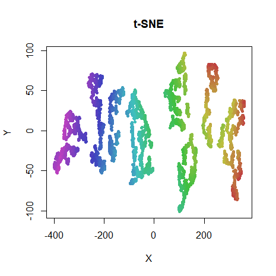 |
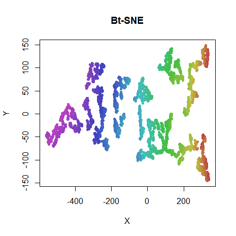 |
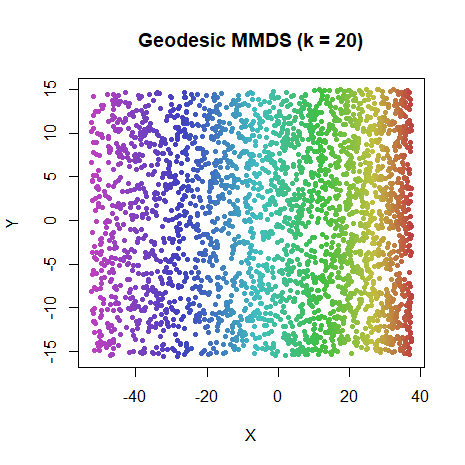 |
BASNE does a really good job here, with just a twist in the manifold spoiling things. Results for the others are less impressive, and the NeRV and BNeRV results are barely changed from the initial coordinates. But the t-distributed results do maintain more an unfolded topology with this initialization than the scaled PCA version. So in the case where you suspect you have a manifold that needs unrolling, a Laplacian Eigenmap initialization may be a better choice than scaled PCA.
Let’s also look at the knn input kernel on this dataset, with both SPCA and Laplacian Eigenmap initialization:
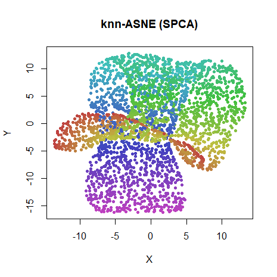 |
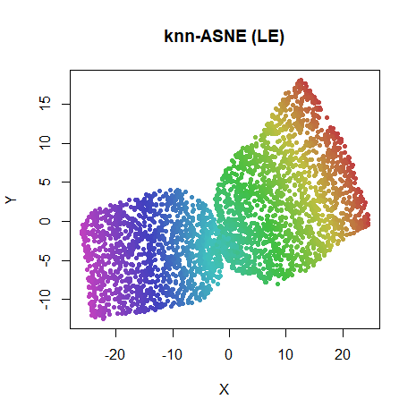 |
An SPCA starting point is again clearly very hard for SNE methods to unroll. A hard cutoff in the input probabilities doesn’t help that much.
Linderman-Steinerberger Exaggeration
In Clustering with t-SNE, Provably, Linderman and Steinerberger note the connection between spectral methods and the early exaggeration phase of t-SNE. They specifically look at the Swiss Roll data, although one which is even more tightly rolled than usual. They show that by turning up the exaggeration factor significantly, and running the number of iterations for longer, the global topology of the roll is preserved, in contrast to the default t-SNE settings.
Can we reproduce these findings in smallvis? Further, if
early exaggeration approximates a spectral method (a fact also noted in
the Elastic
Embedding (PDF) paper), the Laplacian Eigenmap initialization method
should resemble those results too.
I used the following settings for this experiment, to more closely resemble the default t-SNE Matlab settings used in the paper:
# Linderman-Steinerberger exaggeration
sr3k_tsne_ls <- smallvis(
sr3k_30,
scale = "abs",
perplexity = 30,
Y_init = "rand",
method = "tsne",
eta = 1,
momentum = 0,
final_momentum = 0,
max_iter = 1000,
epoch = 100,
tol = 1e-8,
exaggeration_factor = 3000,
stop_lying_iter = 1000
)
# Laplacian Eigenmap
sr3k_le <- smallvis(
sr3k_30,
scale = "abs",
perplexity = 30,
Y_init = "lap",
max_iter = 0
)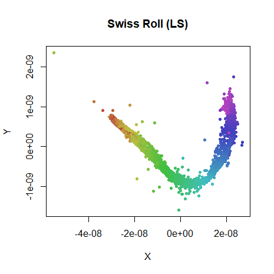 |
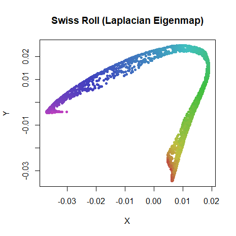 |
The ultra-exaggerated version looks quite similar to the results given in the paper, albeit with more outliers. The exaggeration is very large here, so probably a more gentle learning rate would help. The Laplacian Eigenmap has a similar shape. Good enough for my liking, anyway.
Conclusions
These results don’t show that you can use SNE-like methods to embed the Swiss Roll in 2D very easily. I’d say they indicate that if you really are hell-bent on doing it, it can be done, but you have to be quite particular about perplexity, initialization, using the bandwidths from the input data and choosing the appropriate amount of “stretching” in the output kernel, i.e. t-SNE is not the right tool for the job here.
Also, the poor performance of the SPCA initialization is apparent here. Given that the other datasets I look at do pretty well with SPCA initalization, this is yet more evidence that you don’t want to spend time optimizing for Swiss Roll performance when it comes to real-world performance. But it is extra evidence that using the Laplacian Eigenmap initialization is a good choice.